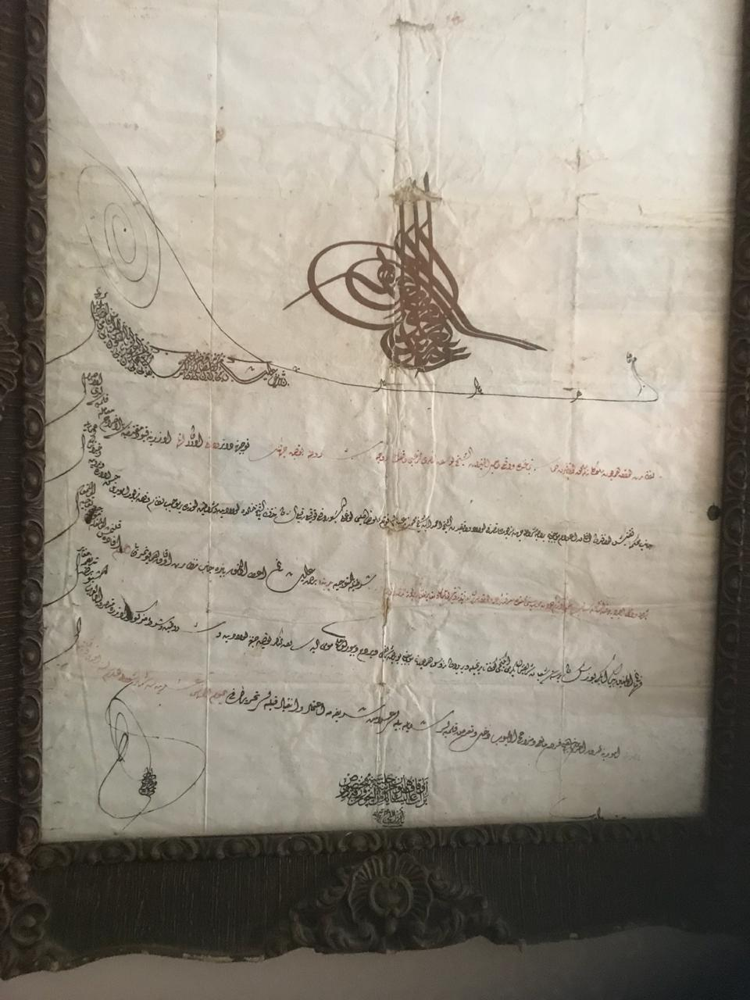

Personal Connection and Historical Context
The firman featured in this project holds significant personal and historical value, having been passed down through generations in my family. Sultan Abdul Hamid II reigned from 1876 to 1909 during a pivotal period of Ottoman history, making this document an important historical artifact. This personal connection motivated me to apply my computer science expertise to preserve and analyze this cultural heritage item, creating a meaningful intersection between my ancestry and modern technology.

Complete Ottoman firman with Sultan Abdul Hamid II's tughra

Detailed view of the Sultan's imperial seal (tughra)

Myself at age 13 with this precious family heirloom
Technical Implementation
1. Image Preprocessing Pipeline
I developed a preprocessing pipeline using OpenCV and scikit-image to address the document's degradation:
import cv2
import numpy as np
from skimage import restoration, exposure
def preprocess_document(image_path):
# Load image
img = cv2.imread(image_path)
# Convert to grayscale
gray = cv2.cvtColor(img, cv2.COLOR_BGR2GRAY)
# Adaptive histogram equalization for contrast enhancement
clahe = cv2.createCLAHE(clipLimit=2.0, tileGridSize=(8,8))
enhanced = clahe.apply(gray)
# Denoising using non-local means
denoised = cv2.fastNlMeansDenoising(enhanced, None, 10, 7, 21)
# Binarization using adaptive thresholding
binary = cv2.adaptiveThreshold(denoised, 255, cv2.ADAPTIVE_THRESH_GAUSSIAN_C,
cv2.THRESH_BINARY, 11, 2)
return binary, enhanced, denoisedNote: The firman images and document in this project are from my personal family collection and are shared here for educational purposes only.